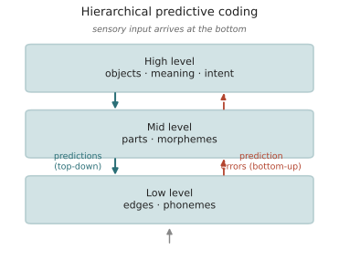

心智 I · 预测脑与贝叶斯大脑
对标：Rao & Ballard 1999、Friston（后附）、Andy Clark《Surfing Uncertainty》、Hohwy《The Predictive Mind》、Knill & Pouget（贝叶斯大脑）｜ 前置：info-02（surprisal）、mean-03 ｜ 证据地位：预测编码作为加工框架【实/争】（有神经证据，覆盖范围有争议）；强版"大脑=单一预测机器"【争】。 线五转回人脑。开篇是一个诱人的呼应：大脑可能本质上是一台预测机器——它不断预测感官输入，只对预测误差做反应。这与"LLM 预测下一符号"惊人地同构。本页讲清这个呼应有多深、又在哪里不能过度解读。它服务乙问（人的智能与预测的关系）。
1. 核心翻转：大脑不是被动接收，而是主动预测
朴素图景：感官把世界"传"进大脑，大脑加工它。预测编码（predictive coding）翻转了方向：
大脑持续地自上而下生成对感官输入的预测，感官信号的作用只是纠正这些预测。真正沿神经通路上行的，主要不是原始数据，而是预测误差（prediction error）——预测与实际的差。
直觉证据到处都是：你听不见自己心跳（被预测掉了），却能立刻察觉一个异响；盲点被大脑"填补"；错觉正是预测压过了输入。知觉是"受感官约束的幻觉"——大脑的最佳猜测，被误差不断校正。
信息论连接（info-02 回来了）：只传预测误差 = 只传surprisal（意外的部分）= 对感官流的高效压缩。预测得越准，需要上行的信息越少。大脑像一个在线压缩器——这把线二的"预测=压缩"直接搬进了神经科学。
2. 层级预测：从边缘到概念
预测编码是层级的（Rao–Ballard 的原始模型）：

- 高层编码抽象、缓慢变化的原因（这是一张脸、一个句子的意思、一个意图）；
- 低层编码具体、快速变化的特征（边缘、音高、音素）；
- 每层向下预测下层，向上只传未解释的残差。整个系统的目标：最小化全层级的预测误差。
这与深度网络的呼应是真的：层级抽象、误差驱动学习、自上而下的生成——预测编码常被视为反向传播的一种生物学上更合理的近似候选。但"呼应"不等于"证明大脑就是这么算的"——请把这条留在【争】。
3. 贝叶斯大脑：预测的规范框架
预测从哪来、怎么更新？贝叶斯大脑假说给出规范答案：大脑是（近似的）贝叶斯推断机——用先验（对世界的预期）结合似然（感官证据），得到后验（更新后的信念）：
- 大量知觉现象（多感官整合、错觉、线索权重）被定量地符合贝叶斯最优（这部分证据较硬，【实】）——大脑按各信号的可靠性加权，正如贝叶斯所要求。
- 预测误差 = 惊异（surprise）= \(-\log P(\text{感官})\)——最小化预测误差 = 最小化长期惊异 = 让内部模型逼近世界的生成结构。又是 info-01/02 的量，出现在神经层面。
这给乙问一个精确形态：如果人脑的通用计算原则是"预测 + 误差最小化"，而 LLM 的训练也是"预测 + 误差最小化"，那么两者也许共享同一类学习原理——差别在架构、数据、接地（线三、线六），而非根本机制。这是"智能从预测涌现"在人脑侧最强的呼应，但下一节要立刻给它降温。
4. 别过度解读：三条冷水
预测脑很美，正因为美，最容易被过度贩卖。三条必须记住的边界：
- "呼应"≠"同一"：LLM 预测符号，大脑预测多模态感官流（且在具身、实时、能耗受限下）。共享"预测"这个动词，不代表实现方式、表征、目标函数相同。同构在抽象层，差异在几乎所有具体层。
- 覆盖范围有争议：预测编码能干净解释知觉，但它是否是全脑的通用原则（运动、决策、语言、抽象推理都算？）远未定论。把它当"大统一理论"是超出证据的。
- 可证伪性问题：越是"能解释一切"的框架，越可能什么都没预测（下一页自由能原理是重灾区）。一个理论的力量在于它排除什么，不在它兼容什么。
所以本页分档：贝叶斯最优知觉 = 【实】；预测编码作为知觉加工框架 = 【实/争】；"大脑是单一的预测误差最小化机器" = 【争】，别当结论。
5. 通向语言与意识
预测脑框架把线五后两页的问题摆了出来：
- 语言加工也是预测（承 info-02 surprisal）：听/读时大脑持续预测下一个词，这在脑电（N400/P600）里可见。那么语言理解在机制上是不是就是"高层的感官预测"？ 这把甲问（预测→能力）延伸到人脑语言——但也逼出乙问的核心裂缝：语言预测网络，和一般推理网络，是同一套吗？（mind-02 的主战场，Fedorenko 说：不是。）
- 意识与预测：一些理论（下页）把意识和"高层预测模型/自我模型"挂钩。这滑向【思】，但预测脑给了它一个可讨论的框架。
6. 要点与思考
思考 1（呼应的正确用法） 预测脑 ↔ LLM 的呼应，不是"所以 LLM 像人脑"的证据，而是一个生成假设的来源：它提示"预测 + 误差最小化"可能是智能的一类通用配方，值得在人和机器身上分别验证差异。把美丽的呼应当问题的起点，不当答案的终点——这是全课反复的纪律。
思考 2（预测统一了线二与线五） surprisal 是加工难度（info-02）、是压缩残差（info-04）、是贝叶斯惊异（本页）、是神经上行信号——同一个量 \(-\log P\) 贯穿信息论、认知、神经。这种跨层级的量守恒，是"预测"作为核心概念最有力的地方，也是你研究可以扎根的硬核。
思考 3（做得动的） 用一个小 LM 算语言的逐词 surprisal，对照人类的 N400/阅读时间（labs L3 扩展）——你就在同一把尺子（\(-\log P\)）下比较机器预测器与人脑预测器。它们在哪里吻合、哪里分岔（回忆 info-02 §7：人像"更笨、上下文更短"的预测器），就是乙问最可操作的入口。\(\blacksquare\)
下一页：心智 II——语言与思维的关系。这是全课的核心张力：机器这边"语言预测 → 广谱能力"，人脑那边 Fedorenko 的证据说"语言网络 ⊥ 推理网络"。同一个"语言与智能"的问题，机器与人脑给出看似相反的答案。这条缝，是你研究最好的入口。